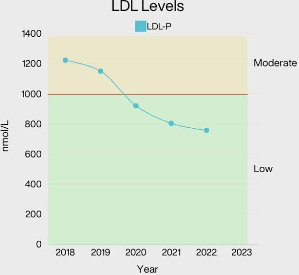

What does LDL-P measure in your bloodwork?
If your LDL-P level falls below the reference range shown on the graph, which category does it enter?
What does HDL-C represent in your lab test result?
Based on the LDL levels indicated on the graph, which category best describes your current risk for heart disease?
What should you do after receiving these lab results?